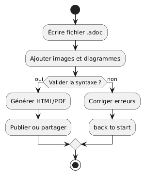

AsciiDoc : Scoprire e padroneggiare la sintassi per una documentazione efficace
Publié le 20 June 2025
Introduzione
AsciiDoc è un linguaggio di markup leggero, progettato per scrivere documenti tecnici strutturati, articoli, libri o ancora presentazioni. Si distingue per la sua leggibilità, la sua ricchezza sintattica e la sua capacità di generare vari formati (HTML, PDF, DocBook, ecc.). In questo articolo, esploreremo la sintassi essenziale di AsciiDoc e proporremo suggerimenti per un avvio rapido.
Cos’è AsciiDoc?
AsciiDoc è un linguaggio di descrizione di documenti, simile a Markdown ma più potente. Consente di strutturare efficacemente testi, titoli, elenchi, tabelle, blocchi di codice e molto altro ancora. La sua versatilità lo rende una scelta popolare per la documentazione di progetti open source, la redazione di libri e la pubblicazione web.
Perché scegliere AsciiDoc?
-
Sintassi leggibile e intuitiva.
-
Supporto nativo di strutture complesse (tabelle, note, avvisi, ecc.).
-
Generazione multi-formato (HTML, PDF, ePub, DocBook…)
-
Integrazione semplice con i generatori di siti statici come JBake o Antora.
-
Personalizzazione avanzata con gli attributi e le estensioni.
Diagramma di caso d’uso (Use Case)
Un diagramma dei casi d’uso consente di presentare le interazioni principali tra gli utenti e il sistema. Ecco un esempio semplice per un sistema di documentazione :

Diagramma Mind Map
La mind map (carta mentale) è ideale per esplorare i concetti legati a AsciiDoc e le loro relazioni:

Diagramma di flusso
Un diagramma di flusso permette di descrivere il processo di generazione di un documento AsciiDoc

Struttura di base di un file AsciiDoc
Un file AsciiDoc generalmente inizia con un titolo, attributi opzionali e poi il contenuto strutturato. Ecco un esempio minimale :
= Titre Principal
Auteur
2024-09-03
:toc:
:icons: font
Votre contenu commence ici...Sintassi fondamentale
Titoli e sezioni
AsciiDoc supporta diversi livelli di titoli:
= Titre de niveau 1
== Titre de niveau 2
=== Titre de niveau 3
==== Titre de niveau 4Testo in grassetto, corsivo e monospazio
*gras* _italique_ `monospace`Elenchi puntati e numerati
* Élément 1
* Élément 2
. Premier
. Deuxième
. TroisièmeLink e immagini
Lien standard : https://asciidoc.org[AsciiDoc]
Image : image::images/logo.png[AsciiDoc Logo]Blocchi di codice
[source,python]def hello(): Buongiorno AsciiDoc!
dipinti
|===
| Colonne 1 | Colonne 2
| Valeur A
| Valeur B
| Valeur C
| Valeur D
|===Note e avvertenze
AsciiDoc propone dei blocchi di informazione visiva:
NOTE: Ceci est une note importante.
TIP: Conseil utile pour l’utilisateur.
WARNING: Attention à ce point.Utilizzo di attributi e variabili
Gli attributi personalizzati consentono di riutilizzare valori o di configurare i comportamenti:
:project-name: AsciiDoc Explorer
Le projet s’appelle {project-name}.Casi d’utilizzo comuni
-
Documentation progetto open source (README, guide tecniche) - Redazione di libri e ebook - Generazione automatica di siti web statici (JBake, Antora) - Presentazioni tecniche
Buone pratiche
-
Utilizza titoli coerenti e un indice automatico (:toc:). - Privilegiate le ammonizioni per attirare l’attenzione sui punti chiave. - Struttura i tuoi file per facilitare la manutenzione. - Approfitta dei blocchi di codice annotati per illustrare esempi.
Conclusione
AsciiDoc è uno strumento potente e accessibile per scrivere qualsiasi documentazione tecnica o articolo strutturato. La sua sintassi ricca, combinata alla generazione multi-formato, ne fa un alleato di scelta per sviluppatori e redattori esigenti. Prova AsciiDoc nel tuo prossimo progetto e scopri la differenza!
Per andare oltre
-
Documentazione ufficiale: https://asciidoc.org - Asciidoctor : https://asciidoctor.org - JBake e AsciiDoc: https://jbake.org/docs/2.6.4/#asciidoc_support
Condividi le tue esperienze e consigli nei commenti!
Articoli correlati
14 May 2026